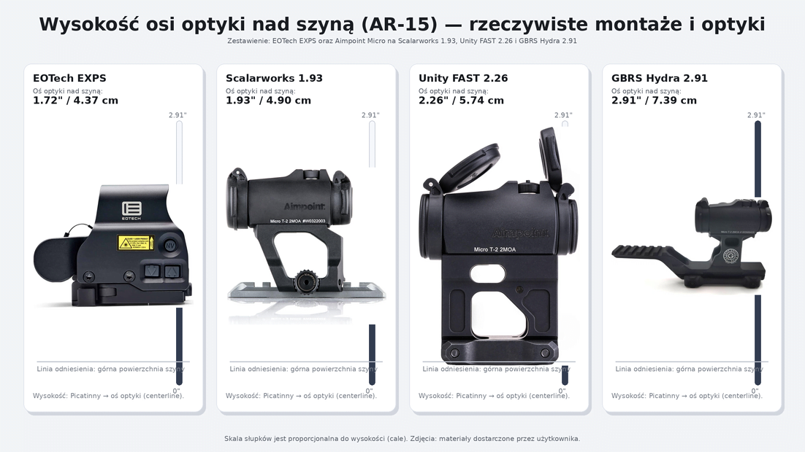
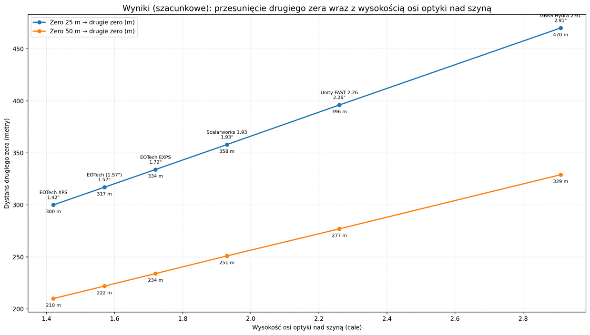

Wstęp
Wysokość montażu optyki w karabinku AR-15 jest jednym z tych parametrów, które w praktyce strzeleckiej potrafią „po cichu” zmienić zachowanie zestawu, mimo że sam proces zerowania wygląda identycznie: ustawiamy punkt trafienia na zadanym dystansie i uznajemy temat za zamknięty. W rzeczywistości zmiana wysokości osi celownika nad lufą (tzw. height over bore) nie tylko wpływa na znany wszystkim offset na bliskich dystansach, ale również przesuwa w przestrzeni drugi punkt przecięcia toru lotu pocisku z linią celowania, czyli tzw. „drugie zero” (far zero).
Im wyżej znajduje się optyka, tym większego kąta uniesienia osi lufy wymaga osiągnięcie tego samego zera na krótkim dystansie, a to z kolei zmienia geometrię całej trajektorii względem linii celowania i powoduje, że „dalekie” przecięcie wypada w innym miejscu, niż strzelec intuicyjnie zakłada, bazując na popularnych schematach typu 25/300 lub 50/200.
Analizę opieramy na wspólnym punkcie odniesienia: AR-15 w kalibrze .223/5.56 z lufą 14,5″ i amunicją 55 gr FMJ. Porównamy konsekwencje zerowania na 25 m oraz 50 m dla czterech popularnych konfiguracji wysokości: EOTech XPS i EXPS oraz kolimator Aimpoint na montażach Scalarworks 1.93″, Unity FAST 2.26″ i GBRS Hydra 2.91″. Przedstawione wartości mają charakter modelowy i służą do zrozumienia trendu oraz skali zmian.
Co znaczy „wysokość montażu” i dlaczego zmienia drugie zero?
W optyce kolimatorowej i holograficznej interesuje nas nie „ile jest risera”, tylko wysokość osi celowania ponad osią przewodu lufy (HOB, height over bore). Mechanicznie:
- Linia celowania (LOS) jest linią prostą: celownik → cel
- Tor pocisku jest krzywą: zaczyna poniżej LOS, wznosi się względem LOS, potem opada
- Żeby pocisk przeciął LOS na zadanym dystansie zera, musisz ustawić kąt podniesienia osi lufy względem LOS
Im wyżej jest optyka (większy HOB), tym bardziej „pod” LOS startuje pocisk na wylocie i tym bardziej w górę musi być skierowana lufa, żeby trafić „w punkt” na krótkim zerze. Skutkiem tego pocisk dłużej pozostaje powyżej LOS, zanim grawitacja i opór powietrza „ściągną go” z powrotem. W efekcie drugie zero przesuwa się dalej. To czysta geometria w połączeniu z balistyką zewnętrzną: zmieniasz warunek brzegowy, więc zmieniasz kąt, a kąt determinuje, gdzie krzywa przetnie linię prostą po raz drugi.
Od „wysokości nad szyną” do realnego HOB
Dla AR-15 powszechnie przyjmuje się, że odległość od osi przewodu lufy do górnej powierzchni szyny Picatinny na upperze to około 1.215″. Zatem przybliżony HOB:
Często spotkasz też regułę, że płaszczyzna przyrządów celowniczych AR-15 jest około 2.6″ ponad osią lufy (stąd bierze się „absolute co-witness”).
Analizowane konfiguracje
- EOTech XPS (absolute co-witness, na szynie): ok. 1.41-1.42″ nad szyną
- EOTech EXPS (lower 1/3 co-witness): ok. 1.71-1.72″
- Aimpoint + Scalarworks 1.93: 1.93″ (49 mm)
- Aimpoint + Unity FAST 2.26: 2.26″
- Aimpoint + GBRS Hydra 2.91: 2.91″

Jak przesuwa się „drugie zero” dla zera 25 m i 50 m
Punkt odniesienia: w praktyce strzeleckiej funkcjonuje koncepcja „25/300” dla karabinków 5.56 (near zero ~25 m, far zero ~300 m) jako schemat szkoleniowo-bojowy. Dla „50/200” (często w jardach) typowo mówi się o far zero rzędu ~200-225 yd, zależnie od konfiguracji.
- Zero 25 m → far zero ~300 m dla standardowej wysokości zbliżonej do „absolute” (XPS)
- Zero 50 m → far zero ~210 m jako metryczny odpowiednik popularnych opisów 50/200-225 yd

Interpretacja praktyczna
Przechodząc ze „standardowej” wysokości (okolice 2.6″ HOB) na 1.93″ nad szyną, far zero potrafi się przesunąć o kilkadziesiąt metrów. Przy 2.26″ i 2.91″ zmiana jest już „doktrynalna”: to zaczyna być inny system holdów, a nie tylko kosmetyka.
Co to oznacza na tarczy
A) Offset na bliskich dystansach rośnie
W odległościach rzędu 3-15 m pocisk nie ma czasu „wspiąć się” do LOS, więc trafienie będzie zasadniczo niżej o HOB. Przy standardzie ~2.6″ HOB mówimy o ~6.5-7 cm nisko; przy Hydra (~4.125″ HOB) mówimy już o ~10.5 cm nisko. To jest krytyczne przy:
- strzelaniu precyzyjnym w małe strefy (A-zone, head-box)
- strzelaniu „przez przeszkody” (porty, szczeliny)
- sytuacjach, gdzie 2-4 cm błędu robi różnicę
B) Im wyższy montaż, tym wyżej „górka” toru względem LOS
Ponieważ musisz podnieść lufę bardziej, pocisk przelatuje wyżej nad LOS w środkowej fazie. Dla zera 50 m często daje to komfortowy „battle zero” do ~200 m, ale przy bardzo wysokich HOB rośnie maksymalne przewyższenie nad LOS, rosną różnice między „hold center” a „hold low” na 100-150 m i łatwiej o przestrzelenia małych celów, jeśli strzelec trzyma „w punkt” bez świadomości krzywej.
C) Zmiana HOB zmienia nie tylko far zero, ale i mapę poprawek
Jeśli przesiadasz się z 1.42-1.72″ nad szyną na 2.26-2.91″, warto zbudować nowe, proste reguły holdów (np. 7 m / 15 m / 25 m / 50 m / 100 m), potwierdzić far zero realnie (200-350 m, zależnie od wybranego zera) i nie zakładać, że „50/200 zachowa się tak samo”.
Praktyczna porada: mapowanie karabinka po zmianie montażu
Zmiana wysokości osi optyki zmienia offset na blisko i przesuwa drugie zero. Żeby nie opierać się na „gotowcach”, zrób krótkie mapowanie po ustawieniu zera.
1) Procedura w skrócie
Ustaw lub potwierdź zero na 25 m albo 50 m, a następnie zmapuj trafienia na kilku dystansach i zapisz odchyłkę względem kropki lub krzyża.
2) Minimalny zestaw dystansów
- 5 / 10 / 15 m: offset (trafiasz nisko)
- 25 / 50 m: potwierdzenie zera
- 100 m: kontrola „środka”
- 200 / 300 m: sprawdzenie trendu i weryfikacja drugiego zera
3) Zasada na blisko
Na 5-15 m pocisk praktycznie nie zdąży wejść w linię celowania, więc trafiasz niżej mniej więcej o HOB. Im wyższy montaż (1.93 / 2.26 / 2.91), tym większe „trzymanie w górę” na blisko. Trenuj z małymi celami, aby wymusić precyzję i zapamiętać przewyższenia.
4) Jak potwierdzić drugie zero
- Zero 25 m: sprawdź grupę na 300 m, przy wysokich montażach dodatkowo 350-400 m
- Zero 50 m: sprawdź na 200 m, przy wysokich montażach dodatkowo 250-300 m
5) Efekt końcowy
Zrób sobie prostą „kartę holdów” z odchyłkami dla 5/10/15/25 (lub 50)/100/200/300 m. Będziesz mógł zawsze do niej wrócić w razie wątpliwości. Dodatkowo ćwicz strzelanie na różnych dystansach, używając mniejszych celi; będziesz zmuszony pracować na poprawkach, przez co szybciej je zapamiętasz i staną się intuicyjne.